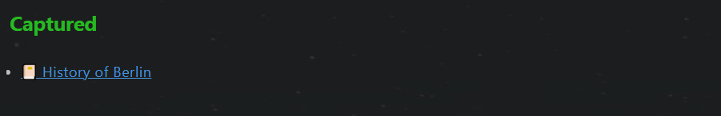

Folder Structure
Root folder in Vault
- 000_Drafts: Default folder for notes, drafts of all possible note types
- 100_Goals_Projects: Pillars, value goals, outcomes & projects, also routines and mindsets
- 300_Journal: Daily routines, events, meetings and other journal elements
- 500_Knowledge_Management: Literature notes, atomic notes, evergreen notes, and topics
- 700_Plan_Review: Weekly review, monthly review, quarterly review and yearly review.
- 900_Supporting_Files: Templates, config, helper ......
Children Folder
100_Goals_Projects
- 110_🏛Pillars
- 111_🔁Routines
- 112_🤯Mindsets
- 130_🌟Value_Goals
- 150_🎯Outcomes
- 170_💎Projects
- 171_📽Video_Projects
300_Journal
- 310_🌄Daily
- 320_🎉Events
- 340_🖥️Meetings
- 390_🧺Journal_Elements
500_Knowledge_Management
- 510_📔Literature_Notes
- 530_⚛️Atomic_Notes
- 550_🌲Evergreen_Notes
- 570_🗩Topics
700_Plan_Review
- 710_❇Weeks
- 730_📅Months
- 750_⌛Quarters
- 770_🌏Years
Note types
The folder structure is based on the note types in different areas(with the exception 900_Supporting_Files ).
Implementation
The yalm front matter is used to document the note type. The following section shows the example of the yalm front matter of a literature note
---
author:
excerpt:
fileClass: literature-note
score: xx
category-literature-note: video
reviewed: x
cover:
date: 2022-05-27
last-review: 2022-05-27
---
The property name is fileClass. It is chosen for better compatibility with the plugin Supercharged links.
Usage
This vault provides a lot of dashboards and other features for automation. These features are supported by the plugin Data Dataview, by querying the note type and other meta information. For example, the following code displays all literature notes, that are not reviewed yet.
```dataview
list
from -"900_Supporting_Files"
where fileClass = "literature-note" and !reviewed
```
Here is the query result from the code.
